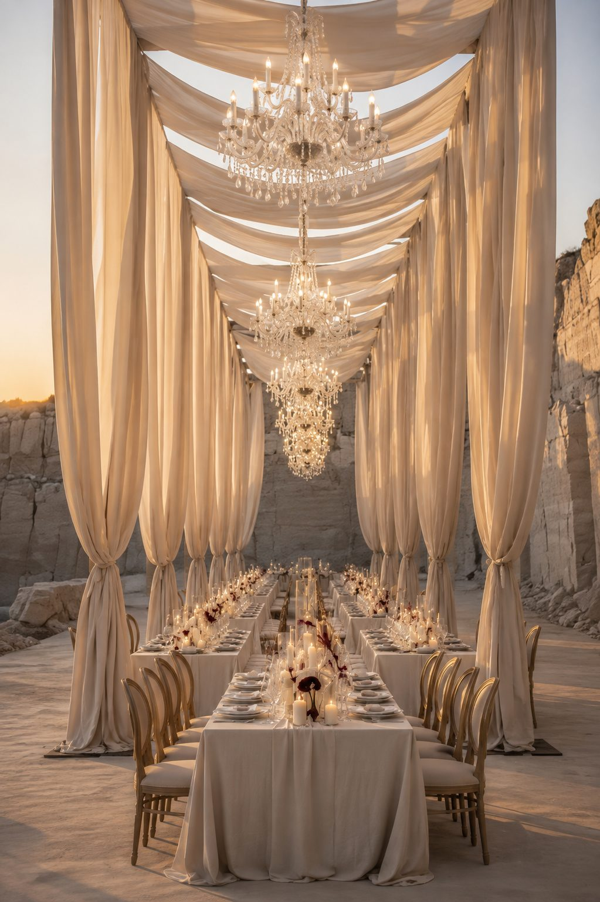
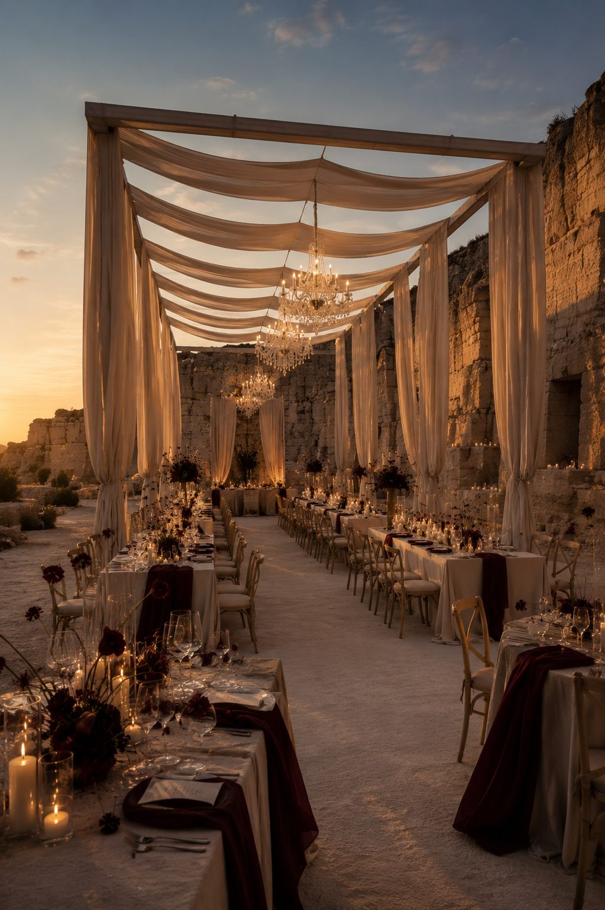
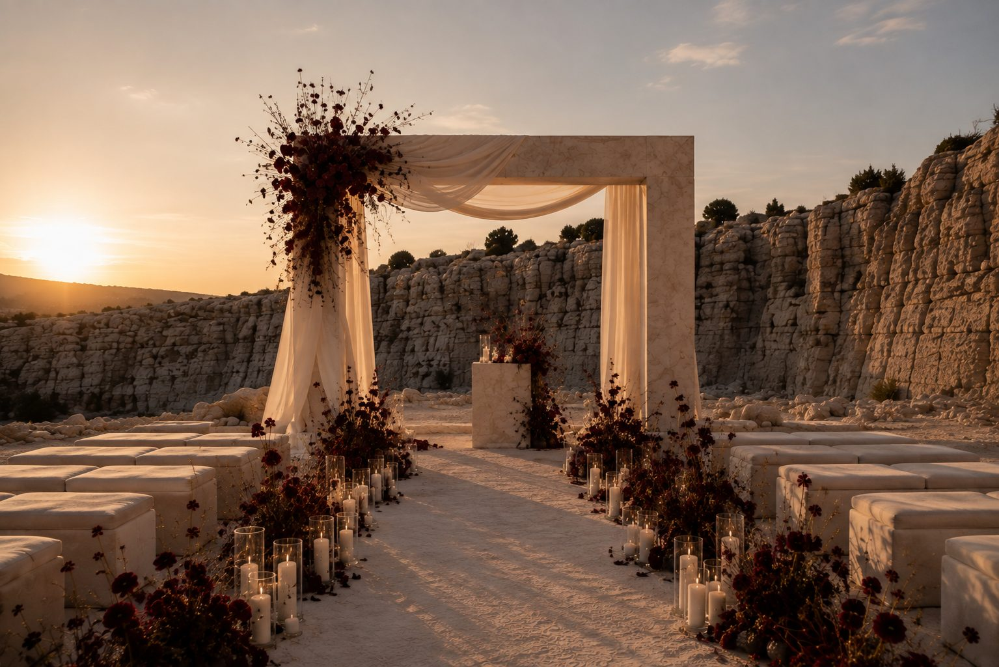
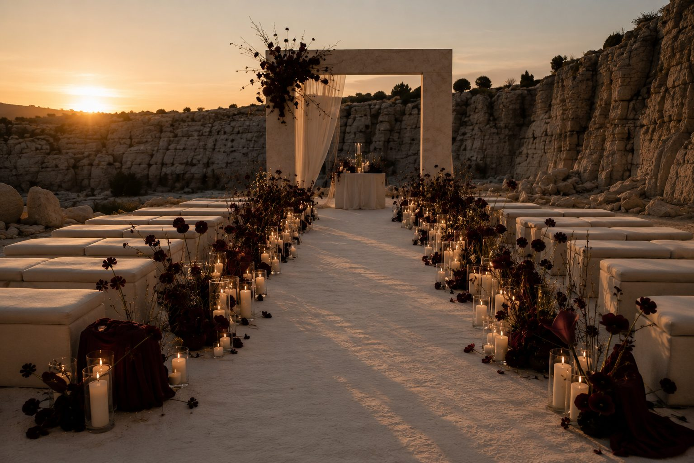
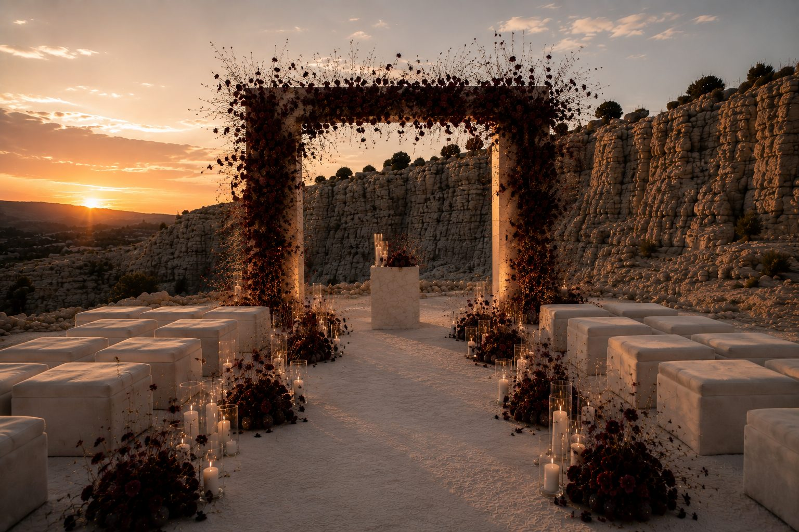
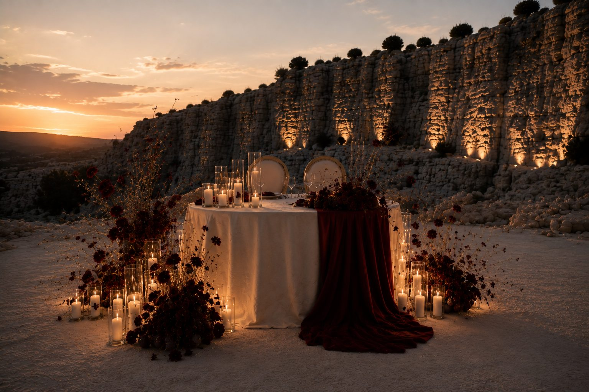
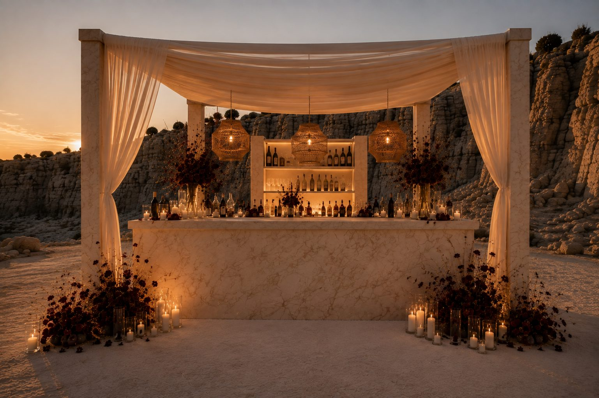
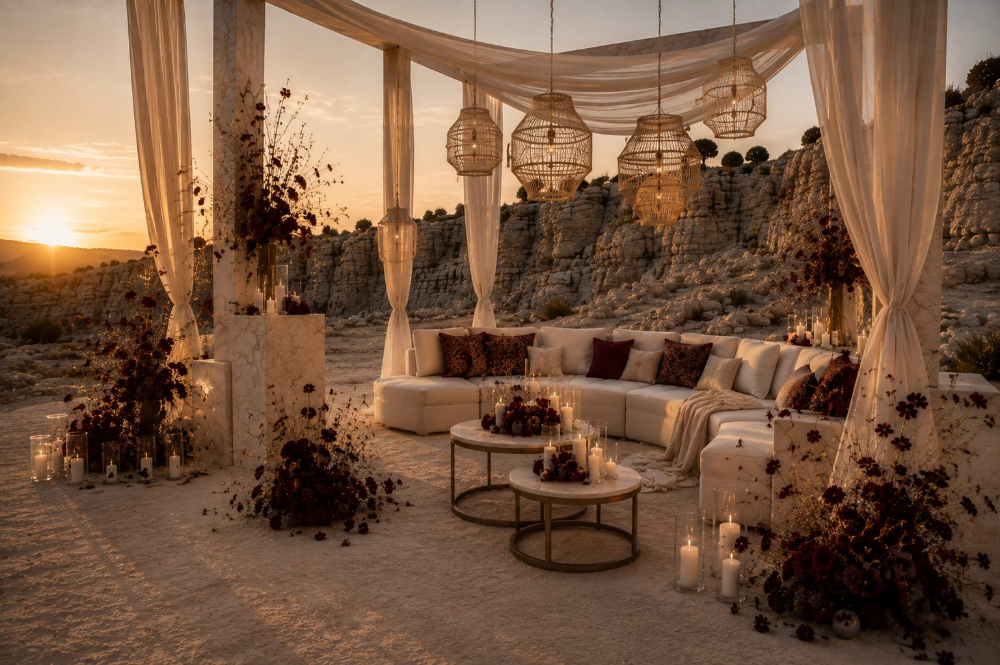

A wedding world imagined as a cinematic corridor of fabric, glass and stone. The sequence is built for movement: guests enter through a softened architectural frame, then follow light deeper into the world.







